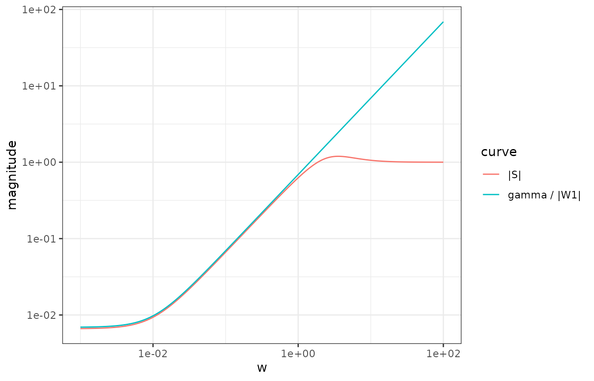

Robust control asks whether a controller keeps the loop stable, and performing well, for every plant in a set, not just for the nominal model. For every method below the article states the uncertainty model, the guarantee, the algorithm and the limits. Nominal stability (the design model) and robust stability (the whole set) are different claims; a controller that works on a few sampled plants has not been shown to be robust.
Unstructured uncertainty and the small-gain theorem
Three standard families describe the true plant G_\Delta with a stable perturbation \|\Delta\|_\infty \le 1 and a frequency weight W:
| family | true plant | robust stability iff |
|---|---|---|
| multiplicative output | (I + W\Delta) G | \|T W\|_\infty < 1 |
| multiplicative input | G (I + W\Delta) | \|T_i W\|_\infty < 1 |
| additive | G + W \Delta | \|K S W\|_\infty < 1 |
with S = (I + GK)^{-1}, T = GKS and T_i = KG(I + KG)^{-1}. These conditions are necessary and sufficient for unstructured complex perturbations (given nominal internal stability and the same number of unstable poles for all plants); they can be conservative for structured or real parametric uncertainty.
A weight that is small at low frequency and grows past one at high frequency says: the model is accurate to 10 percent at low frequency and unreliable (up to 200 percent error) at high frequency:
G <- ctrl_tf(1, c(1, 1))
W <- ctrl_tf(c(0.2, 0.1), c(0.1, 1)) # 0.1 at DC, 2 at high frequency
for (k in c(2, 5, 20)) {
rs <- ctrl_robust_stability(G, ctrl_tf(k, 1), W)
cat("K =", k, ": peak", signif(rs$peak, 3), "robustly stable:",
rs$robustly_stable, "\n")
}
#> K = 2 : peak 0.309 robustly stable: TRUE
#> K = 5 : peak 0.626 robustly stable: TRUE
#> K = 20 : peak 1.29 robustly stable: FALSEThe returned margin = 1 / peak is the largest scaling of
the uncertainty that the loop tolerates.
Generalized plants
Optimal synthesis works with a generalized plant P with
exogenous inputs w (disturbances, noise, references),
controls u, performance outputs z and
measurements y. ctrl_lft() closes the loop
u = K y:
H2 synthesis
ctrl_h2syn() minimizes \|T_{zw}\|_2, the root-mean-square response
of z to unit white noise w. The solution uses
two Riccati equations, one for the regulator and one for the filter
(Zhou, Doyle and Glover, Theorem 14.7). It needs D_{11} = 0, D_{12} of full column rank, D_{21} of full row rank, (A, B_2) stabilizable and (C_2, A) detectable; all are checked. LQG is
the special case above:
h2 <- ctrl_h2syn(P, nmeas = 1, ncon = 1)
h2
#> H2 optimal controller: closed-loop H2 norm 3.29439
#> controller order 2, 1 measurement(s), 1 control(s)H-infinity synthesis (experimental)
ctrl_hinfsyn() finds a controller with \|T_{zw}\|_\infty < \gamma, bounding the
worst-case energy gain from w to z, and
searches the smallest \gamma by
bisection. The algorithm is the two-Riccati solution of Glover and Doyle
(1988) after normalizing D_{12} and
D_{21} with orthogonal transformations
(which do not change the norm). A level \gamma is feasible when both Riccati
equations have stabilizing solutions X_\infty,
Y_\infty \succeq 0 and \rho(X_\infty
Y_\infty) < \gamma^2.
Every controller is certified independently: the closed loop must be internally stable and its H-infinity norm, computed by a different algorithm (Bruinsma-Steinbuch), must be below \gamma. Otherwise the function stops with an error.
hinf <- ctrl_hinfsyn(P, nmeas = 1, ncon = 1)
hinf
#> H-infinity controller (experimental): gamma = 2.89653, certified closed-loop H-infinity norm 2.89652
#> controller order 2, 1 measurement(s), 1 control(s)
c(h2_controller = ctrl_norm(h2$closed_loop, "inf"),
hinf_controller = hinf$norm)
#> h2_controller hinf_controller
#> 4.869285 2.896523
c(h2_controller = ctrl_norm(h2$closed_loop, "2"),
hinf_controller = ctrl_norm(hinf$closed_loop, "2"))
#> h2_controller hinf_controller
#> 3.29439 42.28567Each controller is best in its own norm: the H-infinity design lowers the worst-case gain at the price of a much larger H2 norm. The bisection log shows the search:
tail(hinf$history)
#> gamma feasible
#> 7 2.843206 FALSE
#> 8 2.881627 FALSE
#> 9 2.900838 TRUE
#> 10 2.891233 FALSE
#> 11 2.896036 TRUE
#> 12 2.893634 TRUEScope. Continuous time only and D_{11} = 0. Discrete time synthesis, general D_{11}, structured singular values (mu) and mu-synthesis are not implemented; the package refuses these problems rather than approximating them.
Mixed-sensitivity design
Shaping S, KS and T
with weights is the classical way to state H-infinity design goals:
small sensitivity at low frequency (tracking and disturbance rejection),
limited control effort, small complementary sensitivity at high
frequency (noise and robustness). ctrl_augw() builds the
generalized plant; with the D_{11} = 0
restriction the sensitivity weight W1 must be strictly
proper:
G <- ctrl_tf(1, c(1, 3, 2))
W1 <- ctrl_tf(1, c(1, 0.01)) # integral-like: demands small S at low frequency
P_ms <- ctrl_augw(G, W1 = W1, W2 = 0.1)
syn <- ctrl_hinfsyn(P_ms, nmeas = 1, ncon = 1)
syn$gamma
#> [1] 0.6896671
#> attr(,"frequency")
#> [1] 0.7816826
#> attr(,"bounds")
#> [1] 1.047269 1.047269
K <- syn$K
L <- ctrl_series(K, G)
S <- ctrl_feedback(1, L)
w <- 10^seq(-3, 2, length.out = 200)
df <- data.frame(
w = rep(w, 2),
magnitude = c(Mod(ctrl_freqresp(S, w)$response[1, 1, ]),
syn$gamma / Mod(ctrl_freqresp(W1, w)$response[1, 1, ])),
curve = rep(c("|S|", "gamma / |W1|"), each = length(w)))
ggplot2::ggplot(df, ggplot2::aes(w, magnitude, color = curve)) +
ggplot2::geom_line() + ggplot2::scale_x_log10() + ggplot2::scale_y_log10() +
ggplot2::theme_bw()
The sensitivity stays below \gamma /
|W_1| at all frequencies, as the norm bound guarantees. Plant
poles on the imaginary axis (integrators) are not driven by
w in this setup and make the Riccati equations singular;
shift them slightly into the left half plane for the design and check
the controller on the true plant.
Margins as robustness measures
Gain, phase and disk margins (see the frequency response article) are robustness measures for single loops. The disk margin is the more reliable of them because it covers simultaneous gain and phase changes:
ctrl_disk_margin(L)
#> Disk margin (skew 0): alpha = 1.314 at w = 2.648
#> gain margin: [0.2071, 4.828] (-13.68 to 13.68 dB)
#> phase margin: +/- 66.6 deg